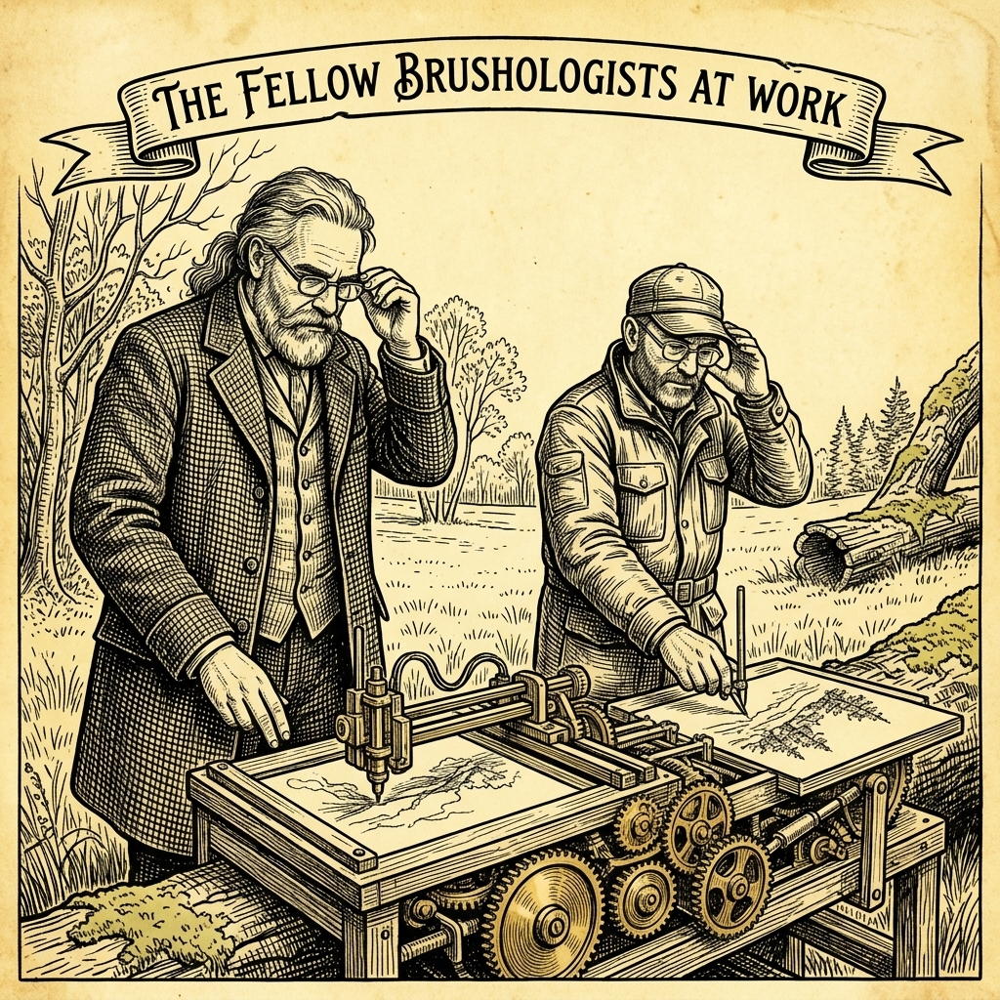
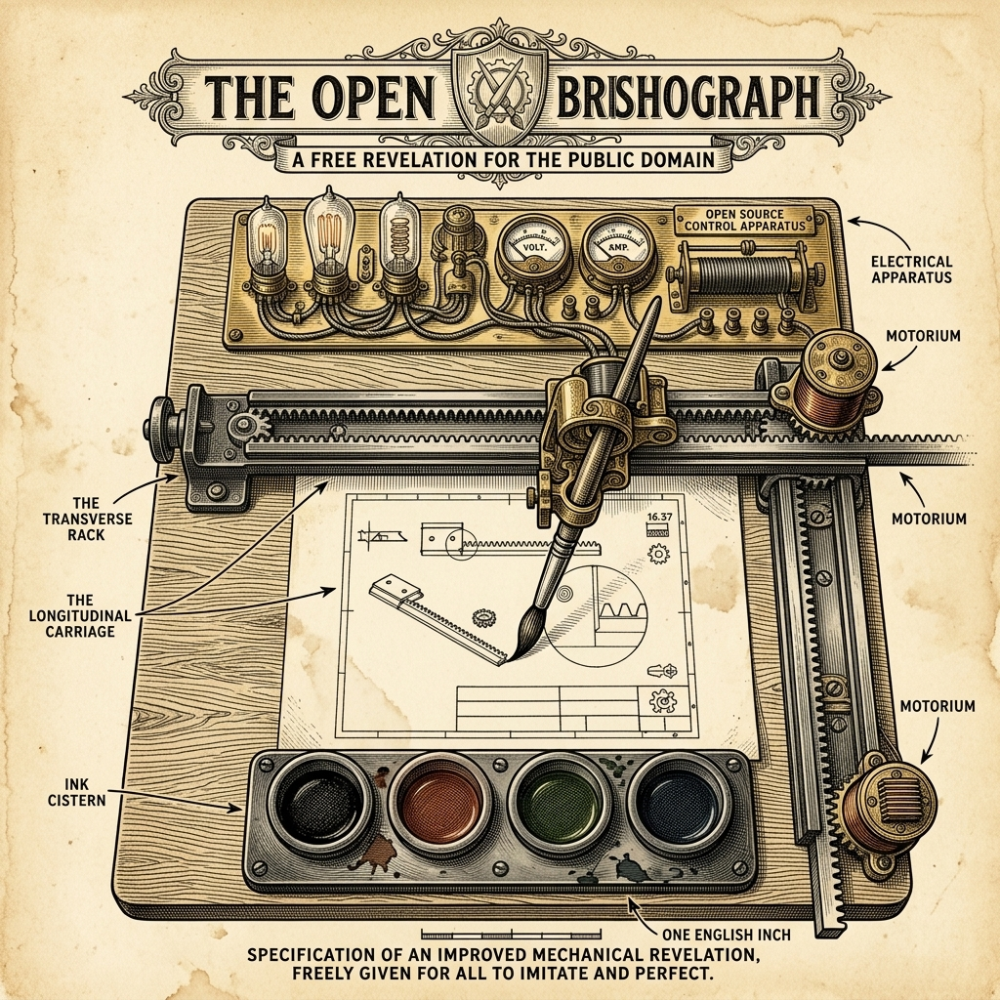
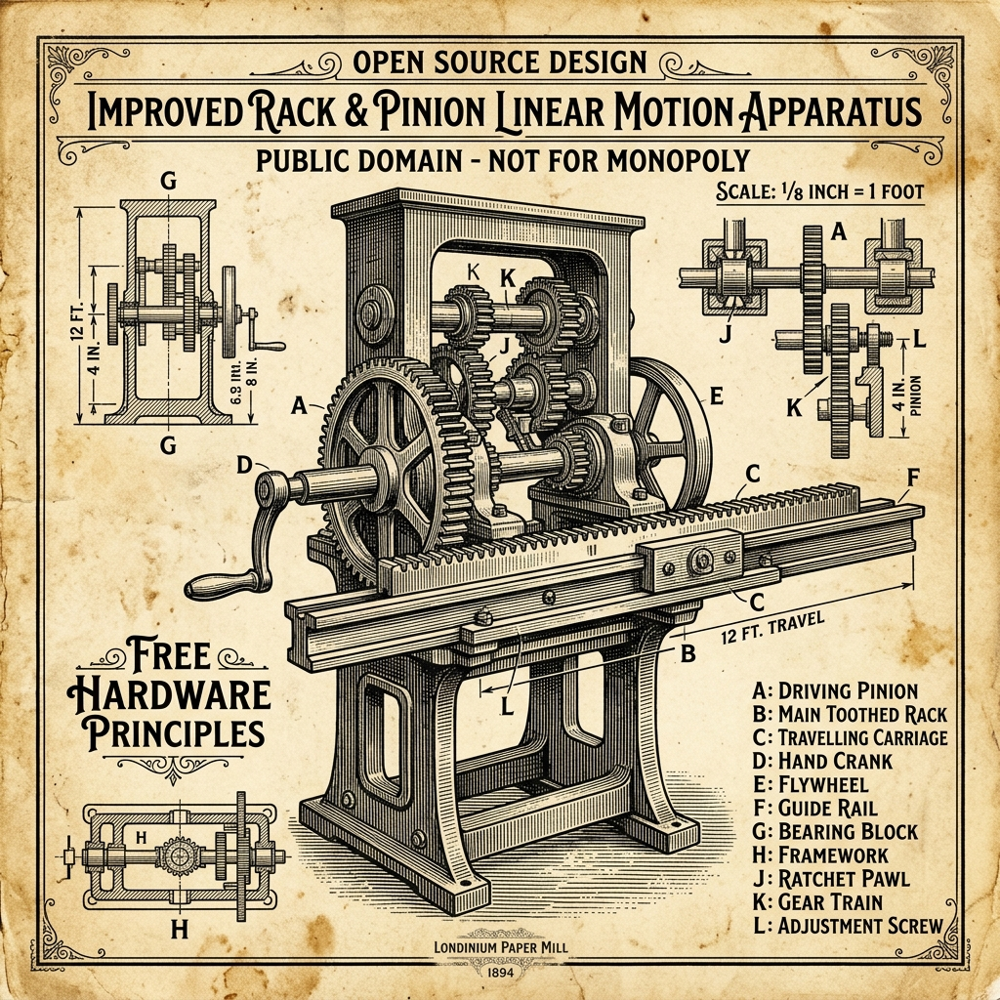

A BRIEF ABSTRACT: Detailing the pedagogical offerings of the Fellow Brushologists—providing expert instruction, Open Source hardware schemas, and practical workshops in Mechatronic Arts to discerning academies, scholars, and FabLabs.
To arrange an engagement, or to inquire regarding reasonable terms for our services, direct all correspondence to: marc@dusseiller.ch

In placing before my readers the results of our extensive experience in Mechatronic Tinkering, G-Code Assembly, and the Taming of the Wild Brush, I must first acknowledge that the genesis of this entire endeavor springs from the visionary work of Dominik Mahnič. He laid the foundational stones of this mechatronic art, and it was only later that I entered the collaboration to assist in the capture of the perfect Brushograph. I may say that I have always done my best to accomplish every workshop task that I have undertaken. We have, in consequence, received excellent testimonials from many Art Academies, Design Schools, and FabLabs.
I have not only made it my study to discover the best methods of capturing a digital image upon a canvas, but I have also taken great interest in watching the ways and habits of the Stepper Motor and the Microcontroller. I have come to the conclusion that there is no sure way of completely mastering these Machines without proper, disciplined instruction.
It is for this reason I title this tract Full Revelations. In the true spirit of Open Source hardware and software, I hold no secrets back from the public. The schemas, the firmware, and the physical mechanisms of our machines are laid completely bare for all to study, modify, and improve upon, just as an honest tradesman shares the tools of his craft without gatekeeping or locked black-boxes.
In doing so, we proudly place ourselves within the long, storied tradition of Swiss anarchists and horological artisans—such as the creators of the magnificent Jaquet-Droz automata. Just as those early watchmakers combined intricate mechanics with radical philosophy, we seek to liberate the art of automation from closed systems, putting the power of the machine back into the hands of the people.

This work will not be complete if I do not deal with the Brushologist’s life. The profession is a peculiar and exciting one, but all right if pursued in the right way. Although the calling takes one into dirty and obnoxious places—often finding oneself covered in stray solder flux, tangled dupont wires, and rogue splashes of Indian Ink—there is no reason why the Brushologist should not always appear respectable.
Of course, there are inconveniences that the Brushologist has to put up with. On one occasion, when going round with my open laptop to examine the G-code streams in the dark of a school's basement, I was taken for a network hacker by the security guard, and he doubted me so much that he would not release me until I had shown him my Brushograph with the Steppers running and my SVG files set all over the place. Then he took almost as much interest in the drawing of concentric circles as myself.
I can assure my readers that the Brushologist is well remunerated by the sheer joy of the Scholars when they first see a machine of their own making drag ink across a canvas. This, I can assure my readers, makes all the "roughing it" worthwhile.

In the first place, my advice is—never introduce a student to a CNC Machine without first letting them feel the Brush. Why? Simply because the G-Codes that you generate are but numbers, and you can depend upon it that the student who only looks at a screen will not understand the physical drag of the Ink, and the consequence is that the resulting artwork will be most obnoxious.
To teach your students to trap and organize these codes, we provide our fully open-source Brushograph Studio App and G-Code Archive. Here, the student learns to hunt the wild algorithms, trapping them safely in the browser without the need for cumbersome installations.